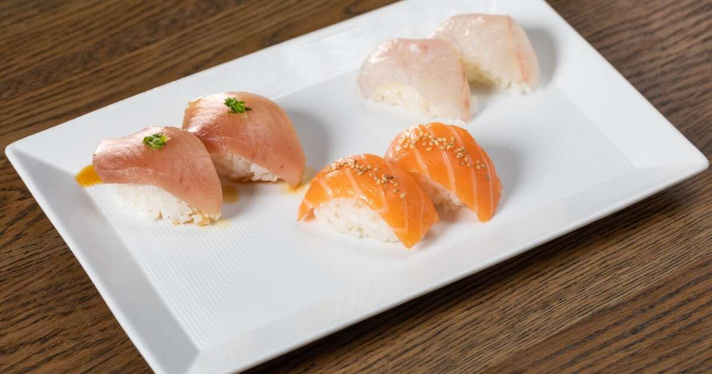
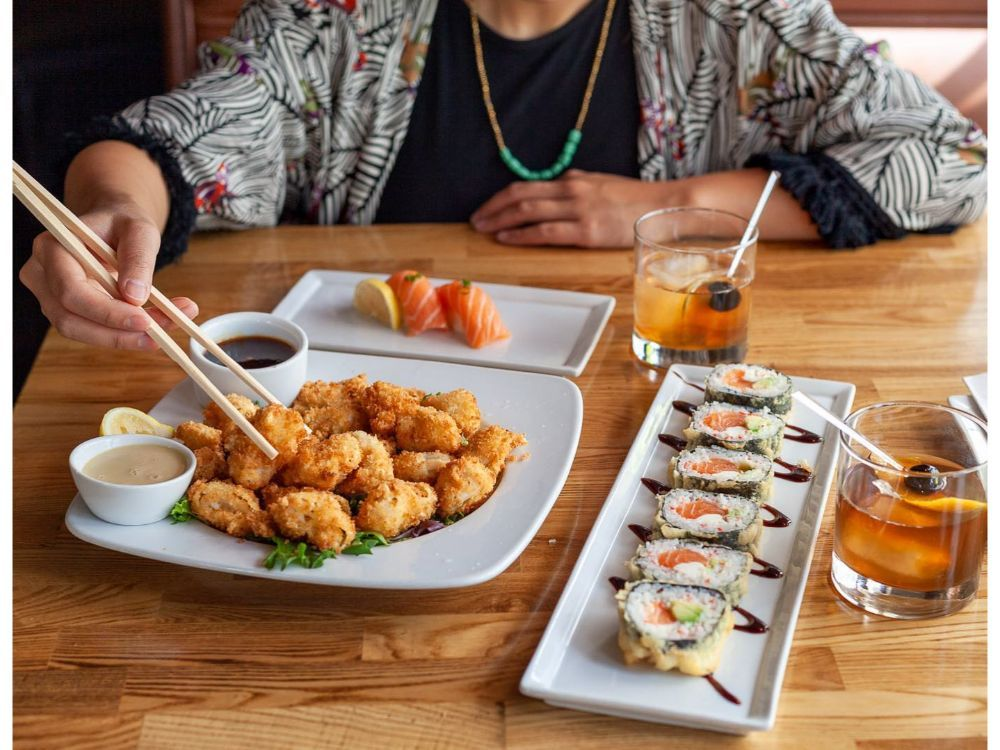

Nobu

Nobu is a globally renowned upscale restaurant and hospitality brand that has achieved widespread recognition for its fusion of Japanese and Peruvian cuisine, creating a unique and luxurious dining experience. Founded by celebrity chef Nobu Matsuhisa, along with partners including renowned actor Robert De Niro, the first Nobu restaurant opened in New York City in 1994. Since then, the brand has expanded rapidly, with locations in major cities across the United States and around the world. Nobu's culinary philosophy centers on the use of high-quality ingredients, innovative techniques, and a commitment to delivering impeccable service. Signature dishes such as black cod miso and yellowtail jalapeño have become iconic, and the brand's chic, minimalist décor and elegant ambiance have made Nobu a sought-after destination for celebrities and food enthusiasts alike.
Beyond its restaurants, Nobu has diversified into luxury hotels and resorts, offering guests a seamless blend of exceptional cuisine and top-tier hospitality. Nobu Hotels can be found in select destinations worldwide, providing guests with a luxurious and immersive experience that combines the brand's culinary expertise with elegant accommodations. Nobu's enduring success is a testament to its commitment to culinary excellence, innovative creativity, and a dedication to delivering a memorable dining and hospitality experience to its patrons, making it a revered name in the world of international cuisine and luxury travel.
Sugarfish
Sugarfish is a renowned restaurant concept that has gained acclaim for its dedication to delivering an authentic and minimalist sushi experience. Established by chef Kazunori Nozawa, the first Sugarfish location opened in Los Angeles in 2008. Sugarfish has since expanded its footprint across various cities in the United States. The brand's core philosophy revolves around the concept of "trust me" dining, where customers place their faith in the chef's expertise to craft a carefully curated omakase-style sushi meal. Sugarfish is known for its commitment to sourcing high-quality fish, using traditional Japanese techniques, and adhering to a simplified menu that focuses on the purity and freshness of the ingredients. This dedication to quality and consistency has made Sugarfish a go-to destination for sushi enthusiasts seeking an authentic and uncomplicated dining experience.
In addition to its traditional sushi offerings, Sugarfish has also introduced the KazuNori brand, specializing in hand rolls and offering a more casual and accessible approach to sushi. The success of Sugarfish and KazuNori underscores the appeal of a straightforward, high-quality sushi experience that prioritizes the essence of Japanese culinary traditions, making it a prominent player in the modern sushi dining landscape.
Kabuki
Kabuki is a well-known chain of Japanese sushi restaurants that offers a contemporary dining experience blending traditional sushi craftsmanship with modern flavors and presentation. With locations primarily in California and other parts of the United States, Kabuki Sushi is renowned for its diverse menu, featuring an extensive selection of sushi rolls, sashimi, and other Japanese-inspired dishes. The restaurant strives to provide a welcoming and stylish ambiance, making it a popular choice for both casual diners and sushi enthusiasts.
Kabuki Sushi emphasizes the use of fresh and high-quality ingredients while also offering creative and fusion-inspired sushi rolls to cater to a wide range of tastes. Whether patrons are seeking classic nigiri sushi or more adventurous options, the restaurant aims to provide a memorable dining experience. With its commitment to delivering a modern twist on traditional Japanese cuisine and a focus on customer satisfaction, Kabuki Sushi has become a recognizable name in the world of Japanese dining in the United States.